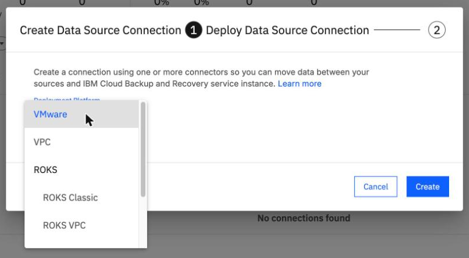
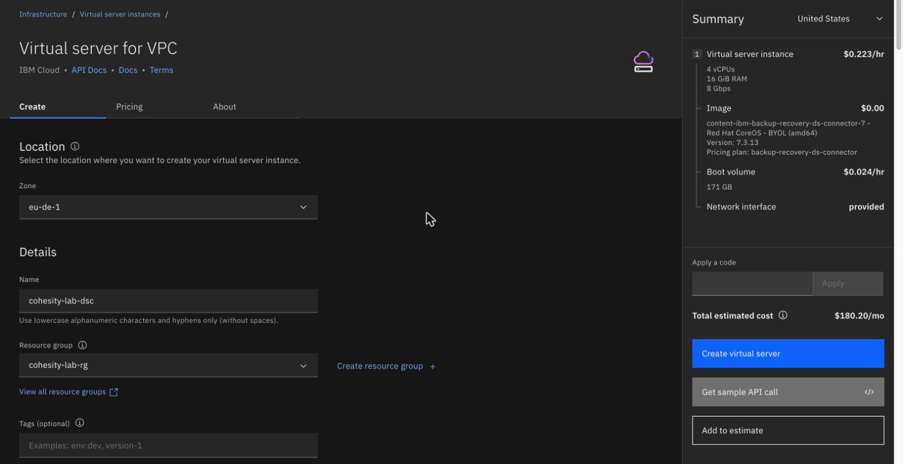
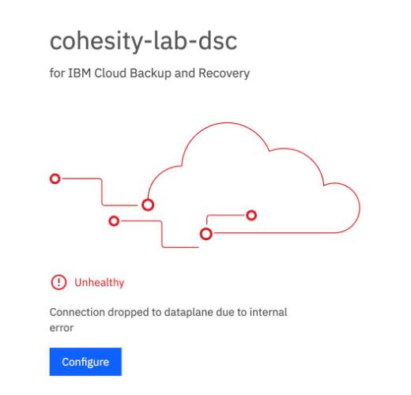

The connector server on VPC
By the end you can say what the connector server does, find the missing package when the backup agent will not install, and follow the console steps that build a connector server and claim it.
Northgate Freight is a made-up company. It has Linux servers in a VPC in Frankfurt and wants BRS to back them up. Its first job is to build the server that links the VPC to the service.
Every number and screen in this unit comes from runs in our lab, on 7 October and 8 November 2026, recorded in tutorial B2a. Server names and addresses were changed to made-up Northgate values, for example ng-app-01 and 10.0.0.10. The screenshots show the lab's own resource names; the registration token is blurred.
What the connector server is for
The connector is a server that links your VPC to the service. It serves many hosts. Each host still needs the backup agent installed on it.
What does the connector server do?
Show the answer
The connector is a server that links your VPC to the service. It serves many hosts. You still install the backup agent on every host that you protect.
How big is the connector server, and when does it run?
Show the answer
In tutorial B2a the connector is a 4-vCPU, 16 GB server that runs all the time. IBM's pricing notes say at least two connectors for production. The lab test used one.
The backup agent will not install
Northgate downloads the Linux backup agent as an RPM, copies it to its Linux server and installs it. This is what came back in our lab on 7 October 2026.
$ sudo rpm -Uvh /tmp/brs-agent.rpm Failed dependencies: lsof is needed by cohesity-agent-7.3.12-1.x86_64, wget is needed by ...
What went wrong?
Show the answer
The message names lsof and wget. Tutorial B2a records this as a pass with two missing packages.
What fixes it?
Show the answer
The tutorial installed nfs-utils, lvm2, lsof and wget with dnf and ran rpm again:
sudo dnf -y install nfs-utils lvm2 lsof wget && sudo rpm -Uvh /tmp/brs-agent.rpm sudo systemctl is-active cohesity-agent; sudo ss -ltn | grep -E "50051|59999" active; listening on 50051 and 59999
Watch for this. On 8 November 2026 the lab server already had lsof, wget, nfs-utils and lvm2, and the install worked first time. Check a new server for them before you install.
Make the connection and the connector server
These screens come from the BRS console and the IBM Cloud console in our lab. Click where you would click. After two misses the right place is marked.

Northgate's servers are in a VPC. Which Deployment Platform do you choose?
Show where
Right. The list starts at VMware; choose VPC. It also has ROKS and IKS (Classic and VPC). The dialog has no name field: the connection gets a generated name. The second step shows links to create the connector server and a VPE gateway, and the registration token, valid for 24 hours.

The catalog link opens this form with the image filled in. In our lab one field started at us-south-2. Click it.
Show where
Right. Check every field; the defaults do not match the lab. On 8 November 2026 the form started at zone us-south-2, resource group Default, profile bxf-2x8, another VPC in the account, that VPC's default security group, and no SSH key. Create virtual server stays disabled until you pick an SSH key, even though the connector refuses SSH logins. The server was running at once, and its web page answered about 1.5 minutes later.

You pasted the token and clicked Save. The page shows this. Where does it say what is wrong?
Show where
Right: Unhealthy, with "Connection dropped to dataplane due to internal error". Tutorial B2a says to wait. Reload the page later to see Healthy.
How long until the connector stays connected?
Northgate opens the connector's web page, logs in, sets a password, replaces the default name and pastes the claim token. Then it clicks Save.
A new connector has the login admin / admin. What happens at the first login?
Show the answer
The default password has expired, so you must set a new one before anything else. Keep it: it is not recoverable from IBM's side. The page also has a Domain Names field; in our lab on 8 November 2026 it was already filled in with cloud.ibm.com.
The connector was saved at about 11:29 UTC on 8 November 2026. How long did it keep dropping before it stayed connected, in our lab?
Show the answer
About 3 minutes, then stable.The API checks showed this:
Time (UTC) Check showed 11:30:08 connected 11:31:20 disconnected 11:31:27 connected 11:32:48 disconnected 11:32:54 connected, and connected in every check to 11:36:26
The connections page then listed the connection with a green tick and one connector.
Three questions
rpm -Uvh of the backup agent stops with "Failed dependencies: lsof is needed". What do you do?
Show the answer
Tutorial B2a installed nfs-utils, lvm2, lsof and wget with dnf, then ran rpm again.
The Virtual server for VPC form opens with the connector image chosen. What should you do before you click Create virtual server?
Show the answer
In our lab the form started at another zone, resource group, profile and VPC, with that VPC's default security group and no SSH key.
Right after you save the connector's setup page, its status says Unhealthy. What does tutorial B2a say to do?
Show the answer
In our lab the connector dropped for about 3 minutes before it stayed connected.
You can build and claim a connector server
The connector server links your VPC to the service and serves many hosts, but every host still needs the backup agent, and its packages first. Check each field of the server form. A new connector may show Unhealthy for a few minutes: wait.
Tutorial B2a installs the backup agent, makes the connection, builds the connector server and claims it, from the console and the command line.